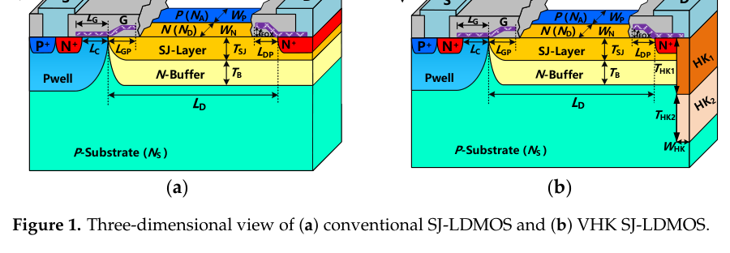
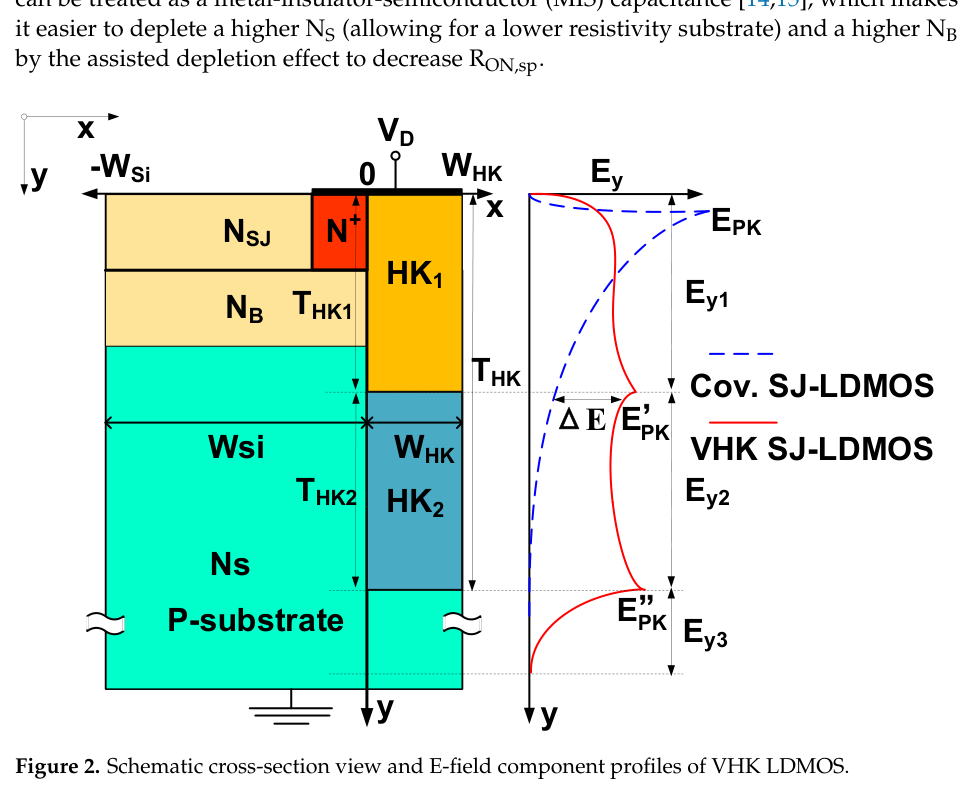

研究导读 · Micromachines · 2022
变介电沟槽超结 LDMOS 的 TCAD 研究
A TCAD Study on High-Voltage Superjunction LDMOS with Variable-K Dielectric Trench
Micromachines, 13(6), 843 (2022)
研究问题
传统 SJ-LDMOS 在长漂移区下受漏端曲率效应和体电场不均匀限制，击穿电压容易饱和，难以接近理论电压承受能力。
核心方法
在 N+ drain 下引入上下介电常数不同的 VHK dielectric trench，上部高 K 区通过 dielectric RESURF 抑制漏端高场峰值，下部较低 K 区扩展衬底耗尽并重新分布纵向体电场。
方法步骤
- E-field bottleneck
识别漏端和体区电场峰值导致的 BV 饱和问题。
- VHK trench
在漏端下方设计上下不同 K 值的介质沟槽。
- Field modulation
利用 dielectric RESURF 和纵向电场重分布提高 BV。
- Device check
同时评估导通、热特性和工艺可行性。
代表性发现
沿沟槽深度改变介电常数可以重新塑造 SJ-LDMOS 纵向体电场，从而提高 BV。
科研图


Variable-K LDMOS 结构
None · 结构图展示高介电常数沟槽在 SJ-LDMOS 中的空间位置和关键几何参数。
读者可以从这张图快速理解 variable-K 设计相对传统结构改变了哪里。
图源：Micromachines, 13(6), 843 (2022)。 © 2022 作者。 CC BY 4.0.
图像复用权待核验


体电场调制机制
None · 图中比较不同结构下的电场分布，展示高介电常数区域对峰值电场的调制作用。
这是论文的物理核心：通过电场再分布提升击穿能力，而不是只做经验参数扫描。
图源：Micromachines, 13(6), 843 (2022)。 © 2022 作者。 CC BY 4.0.
图像复用权待核验
科学意义
这项工作展示了通过介质工程调控体电场的器件设计思路，为高压功率器件结构优化提供了可解释路径。
适用条件
这篇论文是器件物理线的基础工作，适合用来理解后续机器学习辅助器件建模中的结构参数和性能指标。